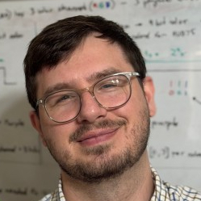
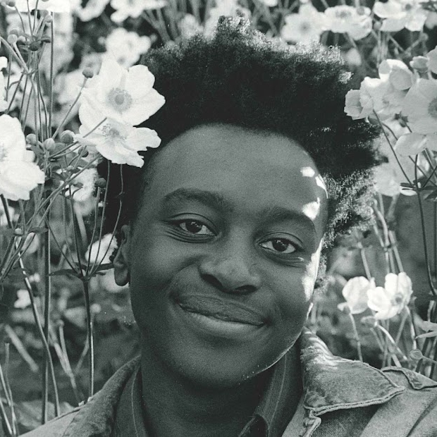
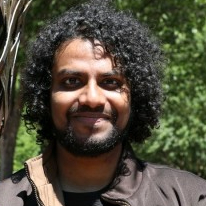

Visual technology that moves us —
how digital images affect emotion, thinking & behavior
Professor Watson founded the VX Lab at NC State in 2006; it had prior incarnations at Northwestern and U. Alberta.

Evan is working on near-zero latency graphics systems. His current prototype displays a response to player or user input in less than 2 ms. His collaborators include stochastic and interactively centered scans. He is collaborating with Profs. Hee-Jin Choi of Sejong and Hyoungsik Nam of Kyung Hee Universities in Korea. He already has several publications, including at SID Display Week, at ACM I3D, and at both Emerging Technologies and the PRICE Workshop at SIGGRAPH. (li)
Anuraag is studying the effect of typical levels of delay on video conferencing. He has also worked with Tianyu Wu on 3D display, publishing a Best Paper at SID Display Week. (li)
Ashish is learning about how competitive gamers configure their systems. He is addressing the following questions: do they favor temporal or spatial detail? Do they understand the systems settings they are configuring? Does their understanding influence their settings choices? He has published at ACM I3D and SIGGRAPH's PRICE Workshop. (li)

Dani is working on improving video conferencing, with collaborators Yoshifumi Kitamura and Miao Cheng at Tohoku University in Japan. First, using a survey of conference experts, he is studying the benefits, challenges and best practices for hybrid conferencing, in which in-person and remote conferencing mingle. Second, to make video conferencing more natural, he is developing a low-cost system that preserves gaze. Dani published a survey of video conferencing research in the journal Presence. (li)
Aaron is developing low latency graphics systems. He specializes in new display scanning patterns, including both stochastic and interactively centered scans. He is collaborating with Profs. Hee-Jin Choi of Sejong and Hyoungsik Nam of Kyung Hee Universities in Korea. His publications include SID Display Week, ACM I3D, and SIGGRAPH's Emerging Technologies and PRICE Workshop. (li)

Arjun is studying esports, especially new methodologies for performing esports experiments, and the effects of temporal (e.g. latency) and spatial detail (e.g. resolution) on game performance. He is performing this work in collaboration with Josef Spjut and others at NVIDIA. He has published at SIGGRAPH, the PRICE Workshop, ACM I3D, CHI Play, Interactions and more.... (li)